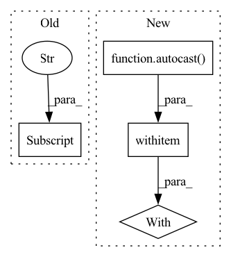

Pattern ID :17527
Before Change
loss_bbox_agg += loss_dict["bbox"].item()
loss_giou_agg += loss_dict["giou"].item()
loss_cls_agg += loss_dict["cls"].item()
loss_peak_agg += loss_dict["peak"] .item()
loss = loss_agg / len(self._train_loader)
loss_bbox = loss_bbox_agg / len(self._train_loader)After Change
targets.append(target)
// Make prediction
with autocast ():
out = self._model(data, mask)
loss_dict = self._criterion(out, targets, self._model.anchors)
// Create absolute loss and mult with loss coefficientIn pattern: SUPERPATTERN
Frequency: 3
Non-data size: 4
Instances Fragment ID: 58008359
Project Name: bwittmann/transoar
Commit Name: 6d0ab8401e1a46fba05f2b17942949478bca68ec
Time: 2022-02-10
Author: bastian.wittmann@tum.de
File Name: transoar/trainer.py
M Class Name: Trainer
N Class Name: Trainer
M Method Name: _train_one_epoch(2)
N Method Name: _train_one_epoch(2)
M Parent Class:
N Parent Class:
M File Name: transoar/trainer.py
N File Name: transoar/trainer.py
M Start Line: 45
M End Line: 87
N Start Line: 55
N End Line: 78
Before Change
loss_abs.backward()
// Clip grads to counter exploding grads
max_norm = self._config["clip_max_norm"]
if max_norm > 0:
torch.nn.utils.clip_grad_norm_(self._model.parameters(), max_norm)
self._optimizer.step()After Change
targets["target_seg"] = seg_mask.squeeze().to(device=self._device)
// Make prediction
with autocast ():
losses, _ = self._model.train_step(data, targets, evaluation=False)
loss_abs = sum(losses.values())
self._optimizer.zero_grad() Fragment ID: 58008358
Project Name: bwittmann/transoar
Commit Name: 67ff1090209f6d8c530711c83549b5eb060e64d6
Time: 2022-01-23
Author: bastian.wittmann@tum.de
File Name: transoar/trainer.py
M Class Name: Trainer
N Class Name: Trainer
M Method Name: _train_one_epoch(2)
N Method Name: _train_one_epoch(2)
M Parent Class:
N Parent Class:
M File Name: transoar/trainer.py
N File Name: transoar/trainer.py
M Start Line: 47
M End Line: 70
N Start Line: 50
N End Line: 82
Before Change
loss_bbox_agg += loss_dict["bbox"].item()
loss_giou_agg += loss_dict["giou"].item()
loss_cls_agg += loss_dict["cls"].item()
loss_peak_agg += loss_dict["peak"] .item()
loss = loss_agg / len(self._val_loader)
loss_bbox = loss_bbox_agg / len(self._val_loader)After Change
targets.append(target)
// Make prediction
with autocast ():
out = self._model(data, mask)
loss_dict = self._criterion(out, targets, self._model.anchors)
// Create absolute loss and mult with loss coefficient Fragment ID: 58008360
Project Name: bwittmann/transoar
Commit Name: 6d0ab8401e1a46fba05f2b17942949478bca68ec
Time: 2022-02-10
Author: bastian.wittmann@tum.de
File Name: transoar/trainer.py
M Class Name: Trainer
N Class Name: Trainer
M Method Name: _validate(2)
N Method Name: _validate(2)
M Parent Class:
N Parent Class:
M File Name: transoar/trainer.py
N File Name: transoar/trainer.py
M Start Line: 107
M End Line: 149
N Start Line: 115
N End Line: 130